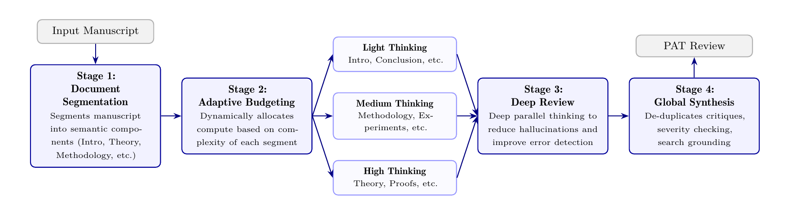

AI now generates science faster than humans can verify it, and peer review is the bottleneck. Google's Paper Assistant Tool (PAT) is an agentic reviewer on Gemini Deep Think. On a math/proof error-detection subset of SPOT it hits 89.7% recall (vs 55.2% zero-shot, 21.1% prior SOTA), and it was piloted as an author pre-submission tool at STOC + ICML across >4,700 submissions. AI가 과학을 만들어 내는 속도를 사람의 검증이 따라가지 못하고, 그 병목이 피어 리뷰다. Google의 Paper Assistant Tool(PAT)은 Gemini Deep Think 기반 에이전트 리뷰어로, SPOT 수학/증명 오류 부분집합에서 재현율 89.7%(제로샷 55.2%, 기존 SOTA 21.1%)를 냈고 STOC+ICML의 4,700+건 제출에서 저자용 사전 점검 도구로 시범 운영됐다.
AI accelerates generating science (code, proofs), but human validation can't keep pace. Peer review is where it hurts most.AI가 과학 생성(코드·증명)은 빠르게 만들지만, 사람의 검증은 그 속도를 못 따라간다. 가장 심한 곳이 피어 리뷰다.
PAT does objective error-finding and improvement suggestions. It does not produce accept/reject scores or subjective assessments.PAT는 객관적 오류 발견과 개선 제안만 한다. 수락/거절 점수나 주관적 평가는 내지 않는다.
Verifying dense proofs needs many "thinking tokens" that overflow a single context; PAT spends that budget adaptively (Light/Medium/High) across segments.촘촘한 증명을 검증하려면 한 컨텍스트에 다 안 들어가는 양의 "thinking 토큰"이 든다. PAT는 이 예산을 세그먼트별로 나눠 쓴다(Light/Medium/High).
A third-party benchmark of manuscripts with verified mistakes that led to errata/retractions. PAT uses a filtered 26-paper/29-error math+CS "equation/proof" subset.정오표·철회로 이어진 실수를 모은 서드파티 벤치마크다. PAT는 그중 26논문/29오류의 수학+CS "수식/증명" 부분집합을 쓴다.
Naive many-independent-calls raises recall but kills precision: 10 passes of 10 issues each forces a human to sift ~100 issues per real critical one. PAT synthesizes + grounds instead.독립 호출을 여러 번 하면 재현율은 오르지만 정밀도가 무너진다. 이슈 10개짜리 10회면 진짜 하나를 찾으려고 ~100개를 걸러야 한다. PAT는 대신 종합과 그라운딩을 쓴다.
A taxonomy (SAE-autonomy analogy): Role 1 tool-for-authors → Role 2 tool-for-reviewers → Role 3(.5) supporting reviewer → Role 4 total automation ("AIrXiv"). PAT is at Role 1/2 today.SAE 자율주행 등급에 빗댄 분류다. Role 1 저자 도구 → Role 2 리뷰어 도구 → Role 3(.5) 보조 리뷰어 → Role 4 완전 자동("AIrXiv"). 지금 PAT는 Role 1/2다.
AI now accelerates the generation of science (code, pattern-mining, theorem-proving), but human validation labor won't scale to match. The bottleneck is most acute in peer review, which is "entirely unequipped to handle the influx of new papers." In math/TCS, reviewing means line-by-line proof verification that "can take a human reviewer days," and submission volume to flagship venues has exploded (combined ICLR+ICML+NeurIPS ~17k in 2020 → ~74k estimated in 2026).
AI는 과학 생성(코드, 패턴 마이닝, 정리 증명)을 빠르게 하지만 사람의 검증 노동은 따라가지 못한다. 논문은 피어 리뷰가 "쏟아지는 새 논문을 감당할 준비가 전혀 안 됐다"고 본다. 수학/TCS 리뷰는 "사람 리뷰어가 며칠 걸릴" 줄 단위 증명 검증인데, 대표 학회 제출량은 ICLR+ICML+NeurIPS 합계 2020년 ~1.7만에서 2026년 추정 ~7.4만으로 늘었다.
"While human verification remains the ideal, the cognitive labor required will not scale to keep pace with automated generation."
— §1 · 원문 보기 (§1)
Prior automated-review work characterizes the problem (SPOT compiles retraction-causing mistakes; its original SOTA scored only 21.1% on the math/proof subset) but "comparatively less work has been done to optimize systems for error detection." PAT specializes in math/CS error detection, not subjective ranking.
기존 자동 리뷰 연구는 문제를 정리하는 데 그쳤다. SPOT은 철회를 부른 실수를 모았지만 원래 SOTA는 수학/증명 부분집합에서 21.1%였고, "오류 탐지에 시스템을 최적화한 연구는 상대적으로 적다." PAT는 순위 매기기가 아니라 수학/CS 오류 탐지에 집중한다.
PAT rejects two obvious baselines.
Instead it runs four stages in sequence (Figure 1).
PAT는 쉬운 베이스라인 두 개를 버렸다.
대신 네 단계를 차례로 돌린다(Figure 1).

PAT's four-stage pipeline (Google-Search grounding in the final synthesis).PAT의 4단계 파이프라인(마지막 종합 단계에서 구글 검색 그라운딩). · Figure 1, arXiv:2606.28277
"PAT employs a 'segmenter' agent to break each paper into segments, each of which is a set of pages which share a logical theme (e.g., experiments, theory, methodology, etc.). The segments can be overlapping and non-contiguous."
— §2 · 원문 보기 (§2)
"The synthesis agent utilizes Google search as an extra check for hallucinations (e.g. non-existent papers or theorems), before assembling the final review."
— §2 · 원문 보기 (§2)
Table 2 — verification accuracy (recall) on the SPOT math/CS equation-and-proof subset:
| Verification method검증 방법 | Detection accuracy탐지 정확도 |
|---|---|
| Original SPOT SOTA (2025)원래 SPOT SOTA(2025) | 21.1% |
| Gemini 3.1 Pro (zero-shot)Gemini 3.1 Pro(제로샷) | 55.2% |
| PAT (Gemini 3.1 Pro) | 89.7% |
PAT gains +34 points over single-generation (the abstract's "34% improvement over zero-shot recall"), i.e. it surfaces ~26 of the 29 known errors. Zero-shot already clears 50% — attributed to a newer model generation and the logic-aware grader. On one dual-Banach-spaces paper, the zero-shot baseline accepted a false claim; PAT refused it and constructed a concrete counterexample exposing a fatal gap.
PAT는 단일 생성보다 +34점 높다(초록의 "제로샷 재현율 대비 34% 향상"). 알려진 29개 오류 중 ~26개를 찾은 셈이다. 제로샷이 이미 50%를 넘는 것은 새 모델 세대와 논리 인지 grader 덕분이다. 이중 바나흐 공간을 다룬 한 논문에서 제로샷은 거짓 주장을 받아들였지만, PAT는 이를 거부하고 치명적 결함을 보여 주는 구체적 반례를 만들었다.
"PAT, however, refused to accept this claim at face value; instead, it constructed a concrete counterexample, exposing a fatal gap that invalidates the main theorem."
— §2.1 · 원문 보기 (§2.1)
Table 3 — author survey (STOC n=124 vs ICML n=733):
| Survey question설문 항목 | STOC | ICML |
|---|---|---|
| Would use PAT again다시 사용하겠다 | 97% | 92.1% |
| Very / mostly helpful매우/대체로 유용 | 92.7% | 90.7% |
| Feedback mostly / all grounded피드백 대부분/전부 근거 있음 | 55.8% | 64.8% |
| Identified substantive theory gaps실질적 이론 결함 발견 | 11.6% | 35.4% |
| Ran new experiments because of PATPAT 때문에 새 실험 수행 | - | 31% |
"Substantive theory gaps" = errors needing >1 hour to fix: ~1-in-10 (STOC) to >1-in-3 (ICML). STOC's 11.6% is called high because those proofs "are rarely checked in their entirety," so such errors would usually go unnoticed. The paper also uses NeurIPS consistency data to argue humans are themselves noisy: a 23% accept/reject inconsistency vs a 35% random baseline (16% excluding borderline cases).
"실질적 이론 결함"은 고치는 데 1시간 넘게 걸리는 오류로, STOC는 ~10편에 1편, ICML은 3편에 1편 이상이었다. STOC의 11.6%도 높은 수치다. 그 증명들은 "전부 검토되는 일이 드물어서" 이런 오류가 대개 그냥 지나가기 때문이다. 논문은 NeurIPS 일관성 데이터로 사람 리뷰도 흔들린다고 지적한다. 수락/거절 불일치는 23%로, 무작위 기준 35%와 비교된다(경계 사례를 빼면 16%).
"Surprisingly, PAT found significant theory errors in more than one in three ICML respondents' papers."
— §3.1 · 원문 보기 (§3.1)
The paper offers a 4-role taxonomy for AI in peer review, analogous to SAE autonomy levels.
PAT operates at Role 1/2 today. Automating logical validation frees humans for "deep conceptual novelty and elegance."
논문은 피어 리뷰 AI를 SAE 자율주행 등급처럼 4-역할로 나눈다.
현재 PAT는 Role 1/2다. 논리 검증을 자동화하면 사람은 "깊은 개념적 참신함과 우아함"에 집중할 수 있다.
Risks the paper raises: accountability (where algorithmic assessment ends and human judgment begins), reviewer deskilling/cognitive complacency, equitable access to compute, algorithmic bias, reduced diversity of opinion, and authors adversarially gaming review agents. Even Role-1 polishing may hide weaknesses, making weak papers look superficially stronger.
논문이 꼽은 위험은 책임 소재(알고리즘 평가와 사람 판단의 경계), 리뷰어 탈숙련과 인지적 안일, 연산 접근의 형평성, 알고리즘 편향, 의견 다양성 감소, 저자의 적대적 게이밍이다. Role-1 수준의 다듬기도 약점을 가려 약한 논문을 겉으로만 강해 보이게 할 수 있다.
"Furthermore, automation may introduce systemic vulnerabilities, such as algorithmic biases and the risk of authors adversarially gaming review agents."
— §5 · 원문 보기 (§5)